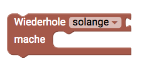
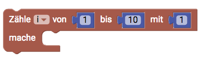

Schleifen
Schleifen sind ein einfaches Steuerelement für deinen Programmcode. Mit einer Schleife kannst Steuern wie oft bestimmte Aktionen ausgeführt werden sollen.

Wiederhole X-Mal
Diesen Block kannst du verwenden, wenn du eine bestimmte Aktion wiederholt ausführen willst. Mithilfe der Zahl kannst du einstellen, wie oft die Aktion innerhalb der Schleife wiederholt werden soll.
Wiederhole solange
Mithilfe dieses Blockes kannst du eine bestimmte Aktion wiederholen lassen, solange einer Bedinung WAHR ist. Füge an diesen Block eine Vergleichsbedingung an. Im Dropdown Menü hast du auch die Auswahlmöglichkeit die Aktion wiederholen zu bis die Vergleichsbedinungen war ist.
For-Schleife
Dieser Block beschreibt die typische for-Schleife in der Programmierung. Mithilfe einer Laufvariable i und einem Laufzeitbereich (z.B 1-10) und einer Schrittweite lässt sich genauer Steuern wie oft und welche Aktion ausgeführt werden soll.